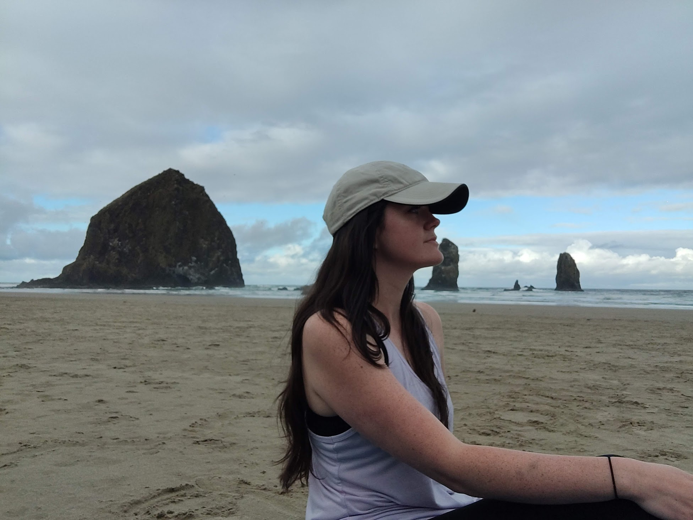
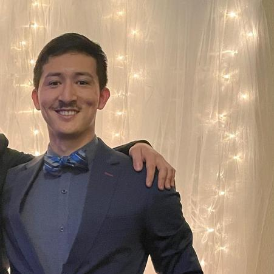

About The Team!
Home
Tiffani Rice

Hello I am Tiffani Rice, a resident of the greater Seattle area, with 7 years of experience in the aviation industry specializing in project coordination and customer support.
In February 2023, I decided to switch gears and pursue a formal education in software development because I wanted a career that would give me continuous challenges on a day to day basis, and stand the test of time!
Arthur Francisco
Hi there, I’m Arthur, a software developer from California and a military veteran. Feel free to connect with me on Github for any future projects or networking opportunities. Thank you for taking the time to check out our website!
Andrew Carroll
A gifted speaker, Andrew loves spoken word, improvising vocals with a jam band,getting outside in the dirt, camping, hiking, water and moving his body through dance and weight lifting. Nutrition is a key part of mental health and Andrew has an intimate understanding of what it takes to stay lean and healthy after a lifetime of self abuse.
Jared Ciccarello

Software engineer
Former marine with over 7 years of working experience in security and team management.
Went to college for communications and have an active secret clearance.
I like cats and sappy movies.
Grew up in Florida and have traveled to over to Japan and California. Now my only focus is on building a family as well as a successful career.